Solusi hukum profesional yang mengedepankan integritas, ketelitian, dan kepercayaan dalam setiap penanganan perkara maupun kebutuhan hukum klien. "Fiat Justitia Ruat Caelum" — Hendaklah keadilan ditegakkan walau langit runtuh.
Memperjuangkan Keadilan, Menghadirkan Solusi, dan Membangun Kepercayaan dalam setiap langkah pendampingan hukum.
Menjunjung tinggi hukum, memperjuangkan hak-hak klien, serta menegakkan keadilan berdasarkan kebenaran dan kepastian hukum.
Memberikan solusi hukum yang profesional, tepat, efektif, dan strategis dalam menyelesaikan setiap persoalan hukum yang dihadapi klien.
Menjaga kepercayaan klien melalui integritas, kejujuran, profesionalisme, dan kerahasiaan dalam setiap penanganan perkara.
"Menjadi firma layanan hukum yang profesional, tepercaya, dan berorientasi pada solusi dalam mendukung kepastian hukum serta penyelesaian permasalahan hukum bagi individu maupun dunia usaha."
KAFI LAW FIRM adalah firma layanan hukum yang berdiri sejak tahun 2019 dan berfokus pada konsultasi hukum, litigasi, mediasi, serta layanan kurator. Kami hadir untuk membantu individu, pelaku usaha, dan perusahaan dalam memahami, menghadapi, serta menyelesaikan berbagai persoalan hukum secara profesional dan terarah.
Dengan mengedepankan integritas, ketelitian, dan pendekatan yang berorientasi pada solusi, kami berupaya memberikan layanan yang sesuai dengan kebutuhan dan kepentingan hukum setiap klien. Setiap penanganan dilakukan dengan memperhatikan ketentuan hukum yang berlaku, karakteristik permasalahan, serta risiko yang mungkin timbul.
Bagi KAFI LAW FIRM, layanan hukum bukan sekadar memberikan pendapat, tetapi juga membantu klien mengambil keputusan yang tepat dengan landasan hukum yang jelas dan dapat dipertanggungjawabkan—baik di dalam pengadilan (litigasi) maupun di luar pengadilan (non-litigasi) pada perkara Pidana, Perdata, Tata Usaha Negara, Agama, Ketenagakerjaan, Perpajakan, hingga Kepailitan & PKPU.
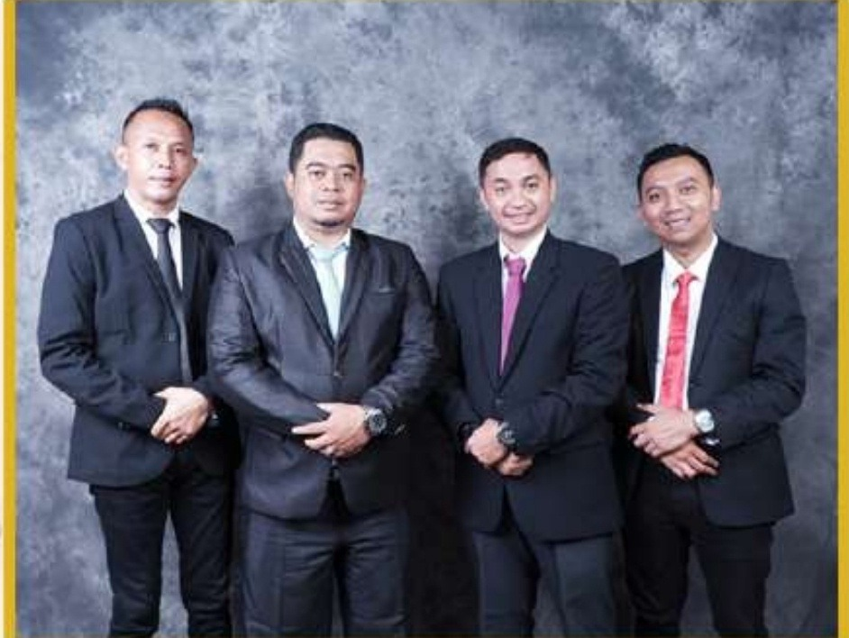
KAFI LAW FIRM berkomitmen menjalankan layanan hukum secara profesional dengan menjunjung tinggi integritas, etika profesi, dan kepatuhan terhadap peraturan perundang-undangan yang berlaku.
KAFI LAW FIRM menyediakan layanan hukum komprehensif untuk membantu klien menghadapi kebutuhan legal, mengelola risiko, serta menyelesaikan permasalahan hukum melalui pendekatan yang profesional dan terukur.
Memberikan konsultasi, analisis permasalahan, pendapat hukum (legal opinion), serta rekomendasi langkah hukum berdasarkan fakta dan ketentuan yang berlaku.
Pendampingan dan representasi hukum dalam penyelesaian perkara melalui proses peradilan, sesuai ruang lingkup kewenangan, penugasan, dan ketentuan profesi yang berlaku.
Pendampingan terkait kontrak dan perjanjian, hubungan bisnis, kepatuhan hukum, risiko korporasi, serta penyelesaian permasalahan hukum dalam kegiatan usaha.
Memfasilitasi proses penyelesaian sengketa melalui dialog, negosiasi, dan mediasi untuk membantu para pihak menemukan kesepakatan yang dapat diterima bersama.
Layanan dan pendampingan terkait persoalan kepailitan, Penundaan Kewajiban Pembayaran Utang (PKPU), serta administrasi dan pengurusan harta pailit sesuai penunjukan dan kewenangan kurator.
Membantu penyusunan, pemeriksaan, dan penelaahan dokumen hukum, termasuk kontrak, perjanjian kerja sama, surat hukum, serta dokumen pendukung lainnya.
Untuk mendukung kebutuhan hukum yang beragam, ruang lingkup praktik KAFI LAW FIRM mencakup spesialisasi berikut:
Pendampingan dalam proses pemeriksaan, penyidikan, penuntutan, dan persidangan.
Sengketa perjanjian, wanprestasi, perbuatan melawan hukum, dan tuntutan ganti rugi.
Kontrak bisnis, tata kelola perusahaan, dan kepatuhan hukum.
Permasalahan perjanjian pembiayaan, kewajiban keuangan, dan hubungan hukum dengan lembaga keuangan.
Pendampingan dalam proses penyelesaian kewajiban utang serta perkara kepailitan.
Permasalahan hukum terkait keputusan dan tindakan administrasi pemerintahan.
Hubungan kerja, hak dan kewajiban para pihak, serta perselisihan hubungan industrial.
Konsultasi dan pendampingan terkait perlindungan hak kekayaan intelektual (Merek, Paten, Hak Cipta).
Transaksi, perjanjian, dan penyelesaian sengketa pertanahan serta properti.
Negosiasi, mediasi, dan alternatif penyelesaian sengketa sesuai ketentuan yang berlaku.
Kami percaya bahwa setiap persoalan hukum membutuhkan analisis yang tepat, strategi yang sesuai, serta komunikasi yang terbuka melalui 5 tahap penanganan terarah:
Memahami kebutuhan klien, kronologi permasalahan, serta tujuan yang ingin dicapai.
Menelaah fakta, dokumen, bukti, dan ketentuan peraturan hukum yang relevan.
Merumuskan alternatif langkah hukum dengan mempertimbangkan risiko, kepentingan, dan kondisi perkara.
Menjalankan langkah yang disepakati bersama sesuai ruang lingkup penugasan dan prosedur hukum.
Memberikan pembaruan perkembangan penanganan serta mengevaluasi langkah lanjutan sesuai kebutuhan.
Menempatkan etika, objektivitas, dan tanggung jawab sebagai dasar setiap layanan.
Menyesuaikan strategi penanganan dengan fakta, kebutuhan, dan tujuan hukum klien.
Mengutamakan kejelasan informasi agar klien memahami proses dan pilihan langkah yang tersedia.
Mendukung kebutuhan hukum personal maupun kebutuhan legal dalam kegiatan bisnis.
Memperlakukan informasi dan dokumen klien secara bertanggung jawab sesuai kewajiban kerahasiaan.
Kami terbuka untuk kerja sama hukum dengan individu, perusahaan, institusi swasta maupun lembaga pemerintahan melalui skema yang fleksibel dan transparan.
Kerja sama jangka panjang untuk kebutuhan konsultasi dan pendampingan hukum operasional perusahaan secara berkelanjutan.
Penanganan masalah hukum spesifik berdasarkan kasus per kasus dengan fokus pada penyelesaian yang cepat dan efektif.
Ketentuan kerja sama yang jelas meliputi transparansi biaya, komitmen profesionalitas, dan fleksibilitas pendekatan hukum.
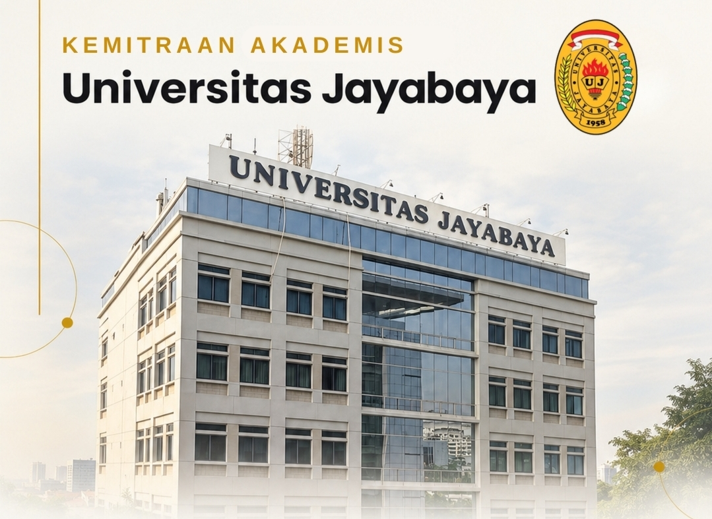
Kemitraan AkademisKAFI LAW FIRM mengedepankan penguatan analisis hukum melalui pendekatan akademis dan profesional. Kolaborasi dengan Universitas Jayabaya menjadi bagian dari upaya memperluas wawasan, memperdalam kajian hukum, serta mendukung penyusunan strategi dan argumentasi hukum yang komprehensif dan terukur.
Pendalaman isu hukum melalui perspektif akademis untuk mendukung analisis terhadap permasalahan hukum yang kompleks.
Kajian hukum berbasis referensi akademis dan peraturan perundang-undangan guna memperkuat argumentasi serta pertimbangan hukum.
KAFI LAW FIRM didukung oleh tim hukum profesional, kurator, akademisi bergelar Doktor, serta paralegal berdedikasi tinggi dengan kompetensi yang beragam.

Advokat Utama (Managing Partners)
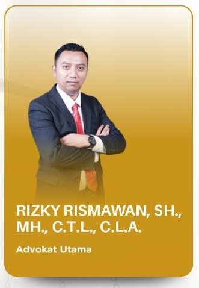
Advokat Utama
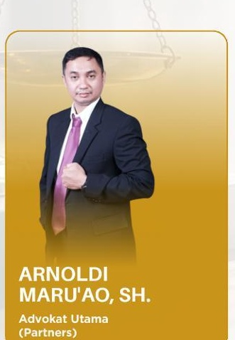
Advokat Utama (Partners)

Advokat Utama (Partners)
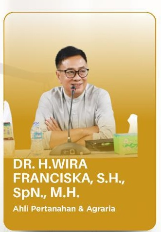
Ahli Pertanahan & Agraria
Ahli Perbankan
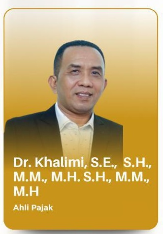
Ahli Pajak
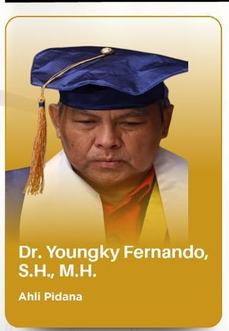
Ahli Pidana
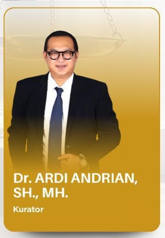
Kurator
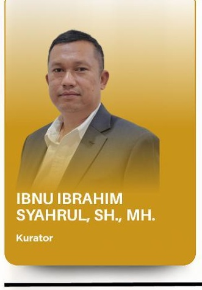
Kurator
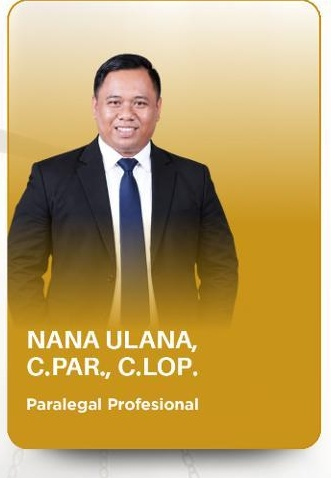
Paralegal Profesional
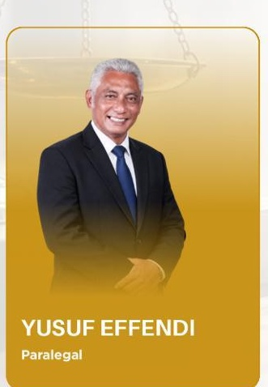
Paralegal
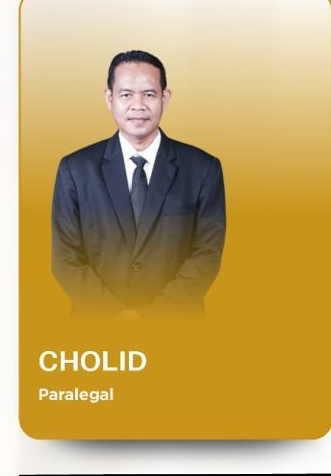
Paralegal
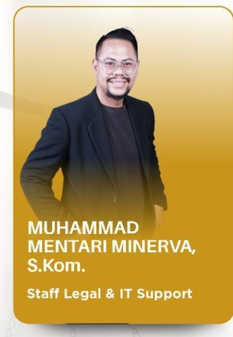
Staff Legal & IT Support
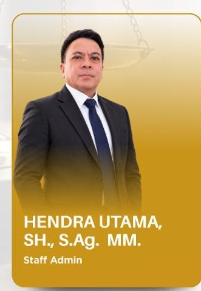
Staff Admin
Kami telah menangani berbagai perkara hukum yang kompleks dan beragam, baik perdata, pidana, perpajakan, maupun kepailitan.
Dengarkan pengalaman nyata dari klien-klien yang telah merasakan layanan profesional kami.
"Pelayanan KAFI LAW FIRM sangat profesional dan responsif. Mereka membantu menyelesaikan masalah hukum kami dengan cepat dan efisien."
"Sangat puas dengan konsultasi yang diberikan. Penjelasan yang jelas dan strategi hukum yang tepat sasaran."
"KAFI LAW FIRM adalah pilihan terbaik untuk pendampingan hukum. Timnya berdedikasi dan sangat kompeten."
"Mereka tidak hanya memberikan solusi hukum, tetapi juga kepastian dan ketenangan pikiran. Sangat direkomendasikan."
"Tim advokat yang hebat! Penanganan kasus kami berjalan lancar berkat keahlian mereka."
"Saya sangat menghargai integritas dan etika profesional yang ditunjukkan oleh KAFI LAW FIRM."
Kami bangga dengan jaringan rekan kerja profesional dan kepercayaan yang diberikan oleh berbagai perusahaan terkemuka.
Temukan jawaban atas pertanyaan umum seputar layanan hukum, mediasi, kurator, dan proses kerja kami.
Anda dapat mengajukan konsultasi awal dengan menghubungi kami melalui telepon/WhatsApp di 0858 1155 8881 atau mengirim email ke kafilawfirm2019@gmail.com. Tim kami akan segera merespons untuk menjadwalkan pertemuan.
Kami melayani Konsultasi Hukum, Litigasi, Mediasi, Kepailitan & PKPU (Kurator), serta Penyusunan Dokumen Hukum yang mencakup Hukum Pidana, Perdata, Perusahaan & Korporasi, Perbankan & Keuangan, Administrasi Negara & TUN, Ketenagakerjaan, Hak Kekayaan Intelektual (HKI), Pertanahan & Properti, serta Perpajakan.
Kami melayani baik individu maupun pelaku usaha, perusahaan swasta, dan lembaga pemerintahan. Pendekatan kami disesuaikan dengan kebutuhan dan karakteristik permasalahan masing-masing klien.
Kami menawarkan dua opsi kerja sama utama: retainer contract untuk pendampingan berkelanjutan, dan kerja sama perkasus untuk penanganan masalah hukum spesifik. Struktur biaya dijelaskan secara transparan di awal berdasarkan kompleksitas perkara.
Ya, tim kami memiliki Mediator Non-Hakim tersertifikasi serta Kurator & Pengurus bersertifikat yang berpengalaman menangani perkara PKPU dan Kepailitan di Pengadilan Niaga.
Ya, kami memiliki pengalaman dalam mendampingi Warga Negara Asing (WNA) dalam berbagai perkara hukum di Indonesia, termasuk keberhasilan meraih putusan bebas bagi klien.
Dokumentasi berbagai kegiatan mediasi, pendampingan hukum, dan profesionalisme tim KAFI LAW FIRM.
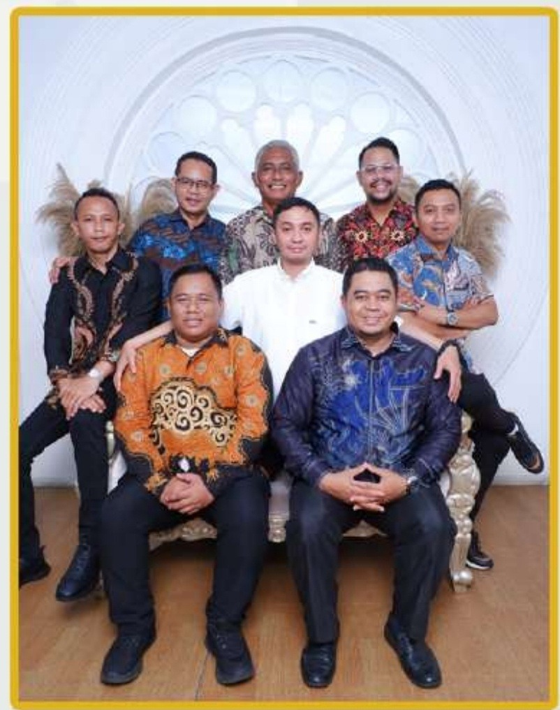
Kebersamaan dan soliditas seluruh jajaran advokat, kurator, paralegal, dan staf legal KAFI LAW FIRM.
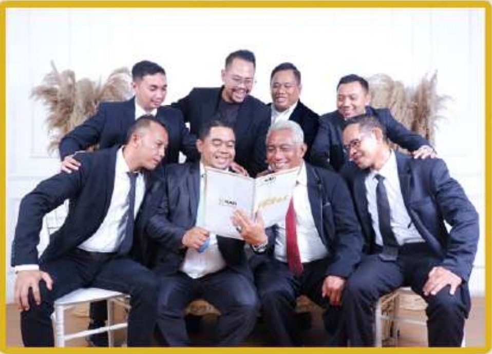
Diskusi strategis lintas keahlian dalam merumuskan solusi hukum yang presisi dan berintegritas.
Tim advokat berlisensi resmi yang siap mendampingi perkara litigasi maupun non-litigasi di seluruh Indonesia.
Setiap persoalan hukum membutuhkan pemahaman yang tepat dan langkah yang terukur. Hubungi kami untuk mendiskusikan kebutuhan hukum Anda.